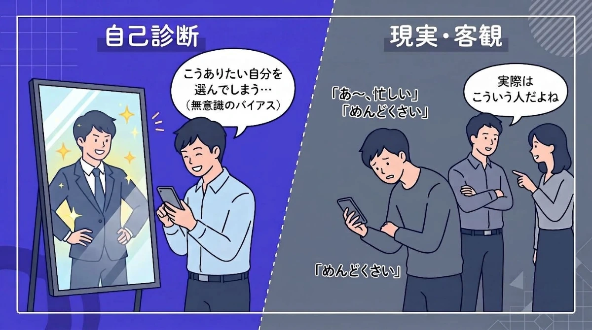
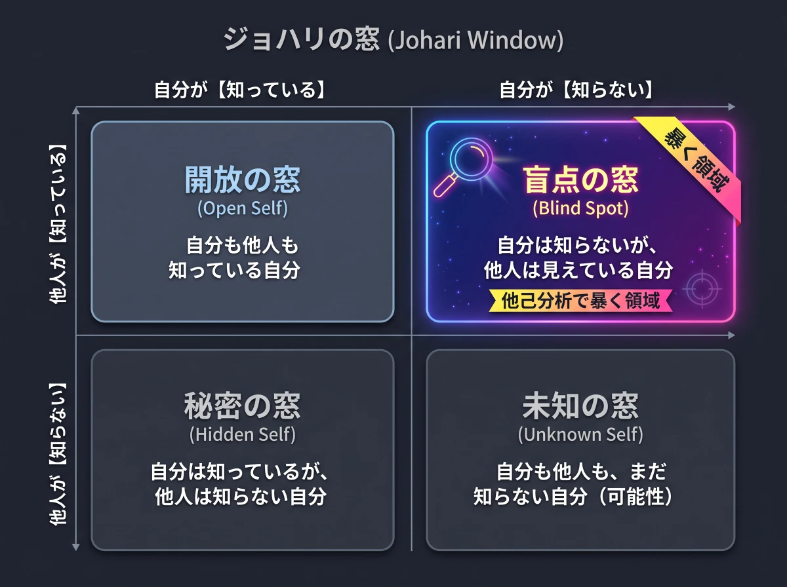
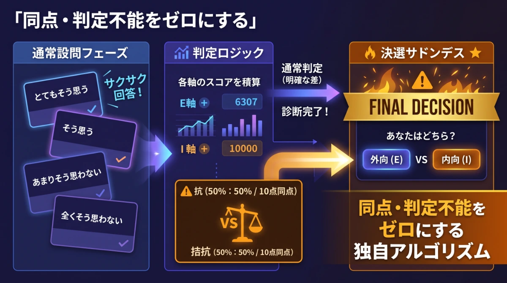
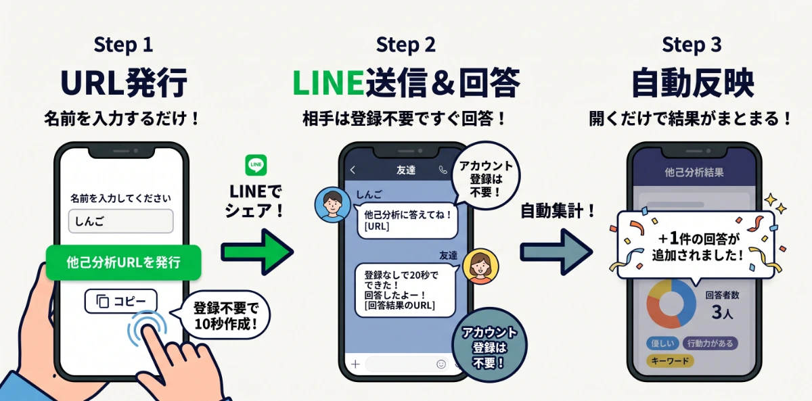
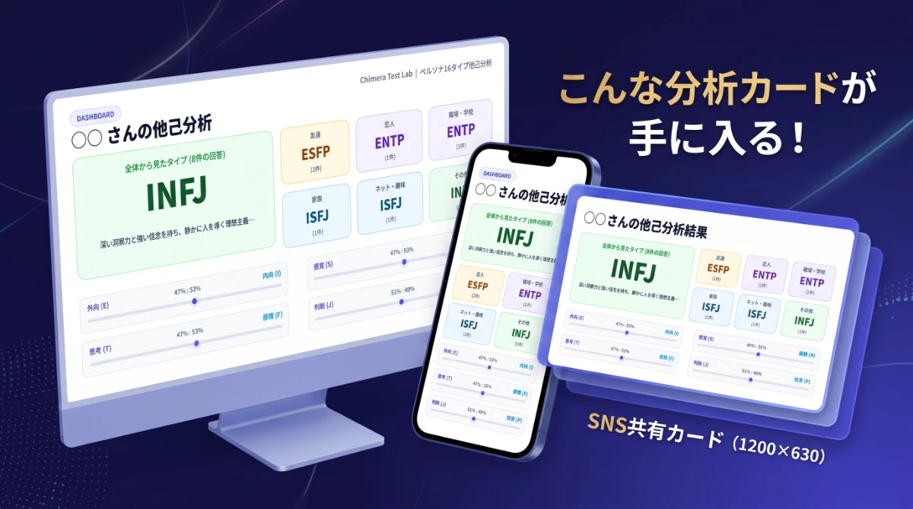

ペルソナ16タイプ他己分析
― 人間関係ごとの顔を暴く性格診断 ―
自分ひとりで答える診断では見えない、
「他人の目に映るあなたの社会的仮面」を解き明かします。
「他己分析」とは？
なぜ自己診断だけでは不十分なのか

心理テストや性格診断の多くは「自分で自分を採点する（自己分析）」形式です。
しかし、人は無意識のうちに「こうありたい理想の自分」を選んでしまったり、自分自身の客観的な癖や振る舞いに気づけなかったりします。

心理学における「ジョハリの窓」の考え方にある通り、自分自身が自覚している領域だけでなく、
「他人にしか見えていない自分（盲点の窓）」を知ることこそが、本当の強みや人間関係の摩擦の原因を解き明かす鍵になります。
人間関係ごとに変わる
「社会的仮面（ペルソナ）」を可視化
人は誰しも、接する相手によって異なる顔を使い分けて生きています。
親友の前で見せるリラックスした素顔と、職場の同僚に見せるビジネスライクな顔、恋人の前で甘える顔がすべて同一人物であるはずがありません。
👥 友達から見たあなた
ノリや空気感、飾らないフランクな場で見せる素のコミュニケーション傾向。
💼 職場・学校から見たあなた
タスク処理や規律、責任感など、公の場で発揮されている実務的なスタンス。
❤ 恋人から見たあなた
感情の共有や心理的距離感、親密な関係性において無意識に出るパーソナルな顔。
🌐 ネット・趣味から見たあなた
共通の関心事や知的好奇心の場で前面に出る、純粋な探求・行動パターン。
本ツールでは、回答者が選んだ関係性（友達・恋人・職場・家族・趣味・その他）ごとに、あなたの印象を自動で分類・集計します。
16タイプ判定の仕組み
（4軸＋決選設問）
回答者は、あなたに関する全16問の設問に直感で答えます。
「どちらともいえない」を排除した4段階評価により、テンポよく迷わずに回答できる設計となっています。
もし回答スコアが完全に拮抗（50:50）した軸があった場合は、直球二択の「決選設問（サドンデス）」が発生し、確実にあなたの傾向を導き出します。

- 外向 (E) vs 内向 (I)： 社交的で発信を好むか、落ち着いて物思いに耽るか
- 感覚 (S) vs 直観 (N)： 現実的・具体的な事実を重視するか、抽象的なアイデアを好むか
- 思考 (T) vs 感情 (F)： 論理と客観性で判断するか、共感と人情を優先するか
- 判断 (J) vs 知覚 (P)： 計画的・秩序立てて動くか、柔軟・臨機応変に動くか
かんたん 3ステップの利用手順

ツールを開いて名前を入力するだけで、あなた専用の回答募集URLが即時発行されます。
回答完了画面から「LINEで結果を送る」ボタン、またはURLコピーで送り返してもらいます。
「友達から見た自分」や「職場から見た自分」など、関係性ごとのペルソナと性格バランスが可視化されます。

よくある質問 (FAQ)
A. いいえ、見られません。
集計されるのは4軸の総合パラメータのみであり、各設問にどう回答したかという具体的な個別回答は相手には一切伝わりません。
A. はい、可能です。
ダッシュボード上部の「🔄 引継・保存」メニューから、バックアップファイルの保存や引継ぎコードの発行ができ、別端末へ安全にデータを移行・復元できます。
A. 完全無料で利用できます。
メールアドレスの登録やログインなどの面倒な手続きは一切不要で、誰でもすぐに発行できます。
A. サーバーへのデータ送信は一切行われません。
すべてのデータはお使いのブラウザ内（LocalStorage）にのみ安全に保持されます。